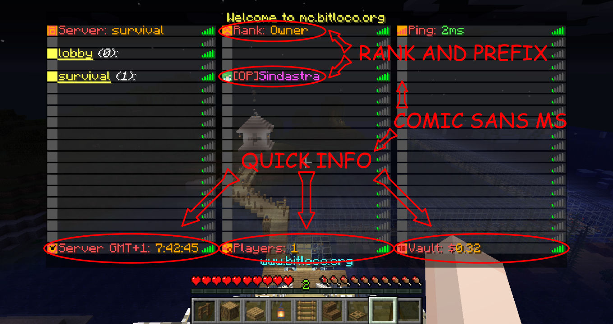

Today, while updating the servers and doing usual maintenance, I also added a new feature: You know how when you hold TAB (while the chat is closed!) you will see a list of online players? Well, you might have noticed that on our network, that tab list is "fancier" than usual.
But today I also added some useful "quick info" to it, as seen on the following screenshot:

Now your rank will be shown at the top, and in the player list your name will have the same color and prefix as in the chat!
Furthermore, you can now see the server time, (total) player count and in-game balance at the bottom row.
Now more typing /balance just to check your in-game balance!
I hope you'll find these changes helpful! Happy playing!
Edit: On the tab list, you can now also see when a player is AFK (it will say "away" next to the name).